1. 연구배경 및 목적
현대중공업은 2021년 조선사업, 엔진기계사업, 해양플랜트사업 등 3개의 사업을 영위하고 있으며 별도 회계기준으로 조선 6.3조원(77%), 엔진기계 1.5조원(18%), 해양플랜트 0.4조원(5%), 기타 0.1조원으로 총 매출 8.3조원을 달성하였다. 조선 빅3인 현대중공업, 대우조선해양, 삼성중공업 모두 조선해양사업 위주의 사업 중이며, 현대중공업만이 엔진기계사업을 하며 매출 비중의 20% 정도를 차지하고 있다.
그림 1. 현대중공업 2021년 사업별 매출 비중(출처: 사업보고서 참고 본인 작성)
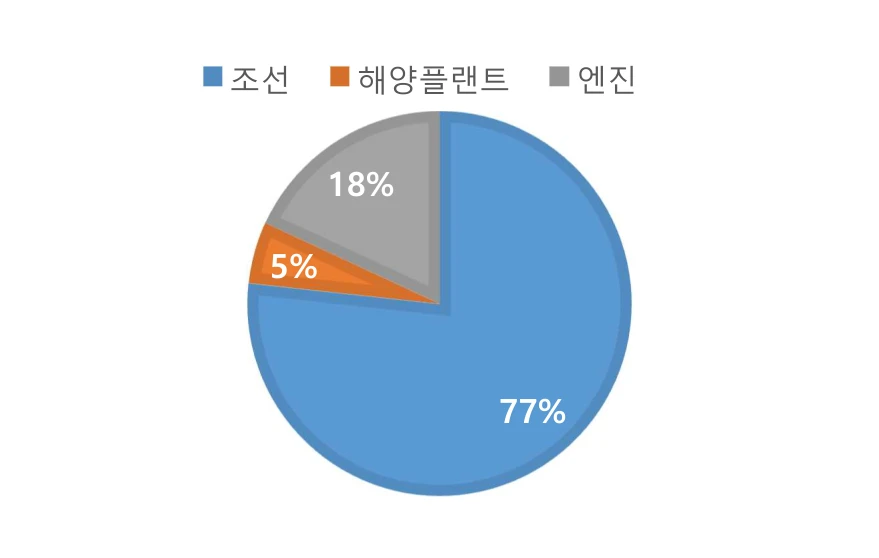
그림 2. 현대중공업 조선/엔진 연도별 매출/영업이익 현황(출처: 사업보고서 참고 본인 작성)
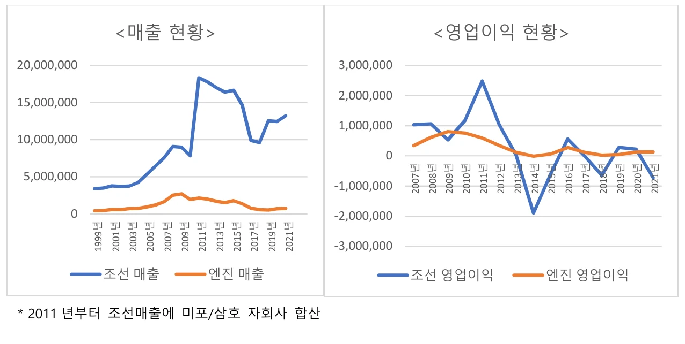
표 1. 현대중공업 세계일류 상품 2021년 기준(출처: https://www.wcp.or.kr/index/)
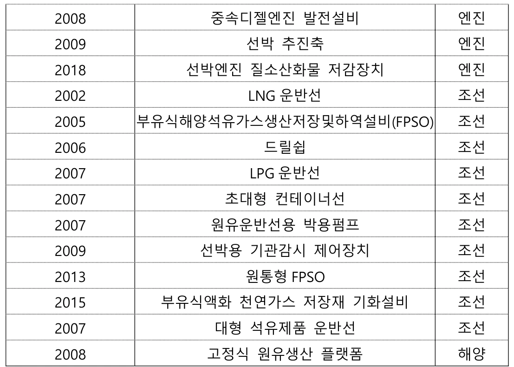
한국조선해양(구 현대중공업)은 연결 회계기준으로 조선업 경기 변동에 따라 조선 사업에서 2014년 1조 8천억원 넘는 대규모 적자를 시작으로 몇 년간 적자를 발생하였다. 하지만 엔진기계 사업만큼은 2014년(109억원 손실)제외하고 지속적인 흑자를 유지하고 있으며 매출 역시 1~2조에 안정적인 매출을 발생하고 있다.
산업통상자원부와 대한무역투자진흥공사(KOTRA)는 세계 일류 상품을 선정 중에 있으며 기준은 세계 시장 점유율 5위 이내이고 5% 이상이며 ① 세계시장규모가 연간 5천만 달러 이상이고 국내시장규모의 2배 이상 ② 수출규모가 연간 5백만 달러 이상 중 하나를 충족한 상품이다. 현대중공업은 총 23개 세계일류 상품을 보유 중에 있으며, 현재 국내 최다 보유 업체이다. 이 중 엔진 사업부 일류 상품은 12개로, 조선 10개보다 많은 전체의 52%를 차지하고 있다.
선박용 엔진은 조선사업의 핵심기자재로 선박가격의 약 10%를 차지하며, 해운 및 조선산업이 발달한 유럽 국가들이 엔진 메이커들을 다수 보유하고 있다. 엔진의 주요 특징으로 ① 선종, 선형에 따라 엔진 종류가 다양하기 때문에 표준화가 어려운 주문제작 방식, 선주 지정 방식인 점 ② 엔진이 탑재되는 선박은 많은 재화와 사람을 수송하므로, 내구성, 안정성 등 고도의 신뢰성이 요구되는 점 ③ 신규 선박 수주 이후 통상 6개월 시점에 엔진 발주되어, 엔진 생산 및 탑재까지 6~9개월 소요되는 장납기 품목이라는 점이 있다. 결론적으로 엔진 시장은 신규 진입이 어려운 시장인 것이다.
그림 3. 엔진 공급 도표(출처: 사업보고서 참고 본인 작성)
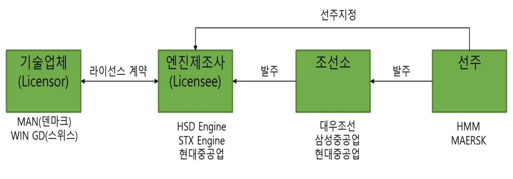
엔진 시장에서 Licensee로서 유럽 기술업체로부터 기술제휴를 통해 제품 양산을 하던 현대중공업은 국내 유일 자체 브랜드 엔진인 힘센 엔진(HiMSEN Engine)을 독자 개발해 중형엔진 시장에 진출하였다. 신뢰성, 안정성을 중요시하여 신규진입이 어려운 엔진 시장에서 HiMSEN Engine은 2001년 4대/年 판매에서 2021년 1,000대 이상/年 판매로, 세계 1위(세계 시장 점유율 25%)가 되었고, 2020년에는 사우디 엔진 합작사(SEMCO)에 기술이전(License) 계약까지 체결하였다. 이러한 사실을 바탕으로 ① 후발주자로서 어떻게 Licensee 업체가 독자엔진 개발 성공할 수 있었는지 혁신 요인과 ② 독자 엔진 개발 이후 어떻게 시장에서 점유율 높이며, 지속 확장할 수 있었는지 성장 요인에 대해 본 연구를 조사하였다.
그림 4. HiMSEN Engine 모형(출처: 노컷 뉴스 2009.12.2, https://www.nocutnews.co.kr/news/658598)
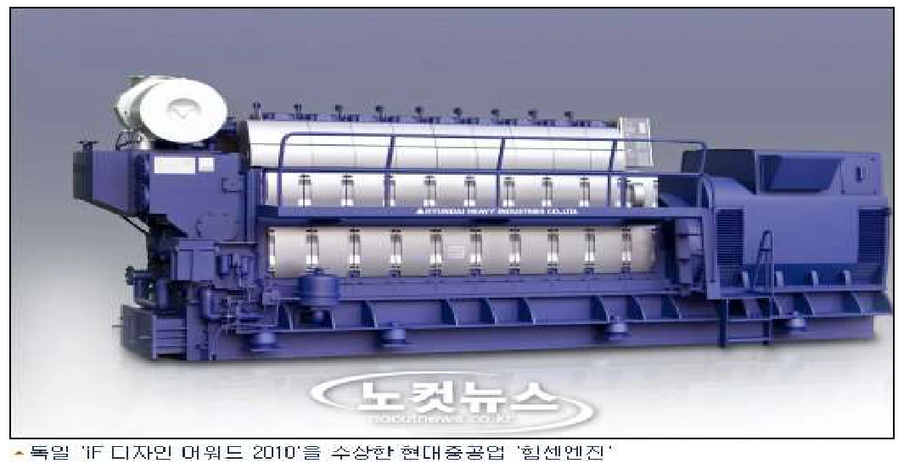
2. 이론적 배경
후발기업들에 경쟁전략에 관한 연구들은 다양한 관점에서 연구1되어 왔다. Schnaars(1994)는 후발기업으로서 시장에서 선발기업을 추월하는 사례를 28개 제품 카테고리로 나누어 분석하고, 경쟁우위 전략으로 저가격 전략, 모방 후 개량 전략, 고품질 및 시 장력(Market Power)을 제시하였다. Golder and Tellis(1996)는 후발기업으로 시장 점유율 1위인 기업을 후발시장리더로 정의하고, 그 요인을 대중시장에 먼저 진출함, 경영자의 집념, 투자, 지속적 혁신 및 자산 레버리지 등을 제시하였다. Shanker, Carpenter and Krishnamurthi(1998)는 혁신적 후발기업 제품이 선발기업 제품 및 비혁신적 후발기업 제품에 비해 시장력과 반복구매율이 높으며, 선발기업 제품보다 더 빨리 성장하는 요인을 선도기업 제품 속성에 편승하는 방법, 소비자로 하여금 후발기업 제품을 또 다른 제품으로 지각하는 방법을 제시하였다. 이윤철과 이동현(1998, 1999)은 후발기업의 이점을 자원 준거이론(Resource Based View: RBV, 기업이 보유한 자원에 의하여 기업의 전략이나 경쟁력이 결정)을 통해 접근하였다. 기업의 성과에 영향을 미치는 자원은 흡수능력과 결합능력으로 대표되는 조직의 학습능력에 따라 영향을 미친다 주장하였다.
김왕동(2002)은 개발도상국 기업의 기술능력 축적과정에서 외부 환경요인이 내/외부 기술 원천과 기술전략(내부 R&D 활용, Joint Venture 설립, 라이선스 도입 등)에 영향을 주고, 내/외부 기술 원천과 기술전략은 기술학습활동에 영향을 준다고 제시하였다. 내/외부 기술 원천, 최고경영자 특성 및 조직 요인으로부터 기술지식을 받은 조직은 관찰, 평가, 설계, 실행 과정으로 기술학습(시행착오에 의한 학습, 피드백을 통한 학습, 연구개발에 의한 학습 등)하여 기술을 축적하게 된다고 주장하였다. 최종적으로 기술능력 축적 후 내부 기술원천이나 기술전략으로 선순환(Cycling Process)되어 다시 기술 학습활동에 영향을 준다고 제시하였다.
그림 5. 개발도상국 기업의 기술 능력 축적과정 (출처: 기술능력의 축적과정 및 영향요인에 대한 연구, 김왕동, 2002)
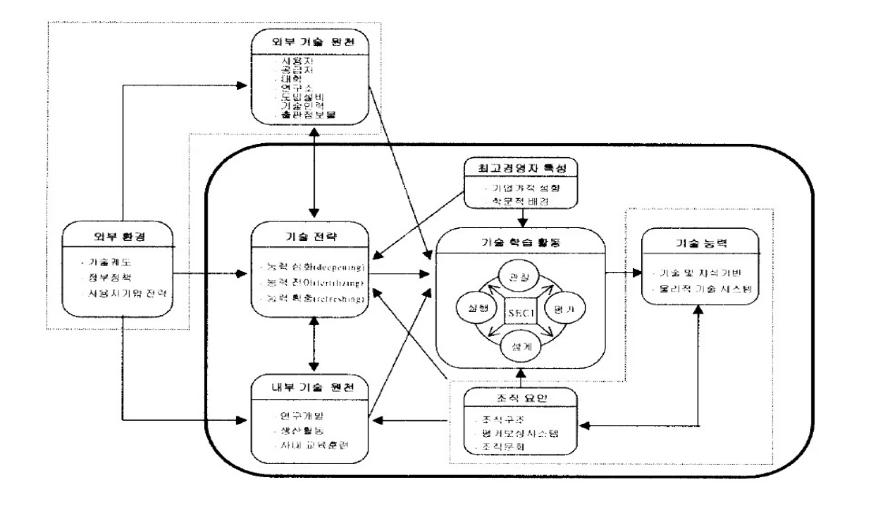
이진주, 배종태(1998)은 산업단계별 기술개발 과정에서 기술개발 단계를 LDC(Less Developed Countries), NIC(New Industrializing Countries), DC(Developed Countries) 등 산업단계에 따라 구분하였다. 개발도상국 기업들은 Mature(성숙) 기술을 DC(선진국)로부터 주로 Non Formal Channel(비공식적)로 이전을 받아 Acquisition(획득), Assimilation(흡수), Improvement(개량)하며, 산업화/선진화 국가들의 기업들은 New Technology를 주로 Formal Channel(Licensing, Joint Venture)로 이전 받아 획득, 흡수, 개량한다 설명하였다.
그림 6. 산업단계별 기술개발 과정(출처: Technology development processes: A model for a developing country with a global perspective, 이진주, 배종태 외, 1988)
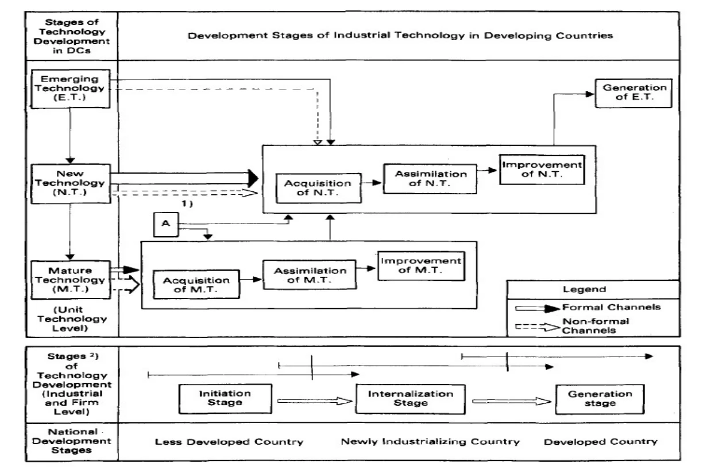
표 2. 엔진의 분류(출처: 사업보고서 및 IR 자료 참고 본인 작성)
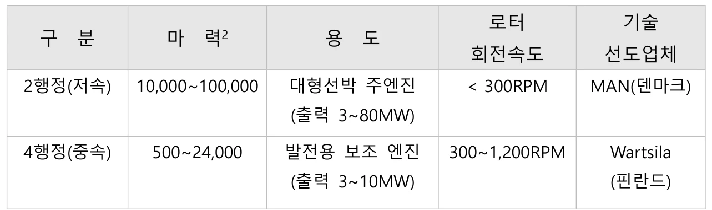
본 연구에서는 개발도상국 기업의 기술 능력 축적과정(김왕동, 2002) 이론을 주요 분석틀로, 산업단계별 기술개발 과정(이진주, 배종태 외, 1988) 이론을 보조 분석틀로 사용하여 혁신 요인을 고찰하고자 한다.
3. 산업 및 기업 분석
본 연구의 엔진은 해상용 발전용(Marine Genset) 엔진, 선박용 추진 엔진(Marine Propulsion), 육상 발전용 엔진(Power)으로 구분된다. 선박용 엔진은 선박의 추진을 위한 주엔진과 발전용 보조 엔진으로 나누어 지며, 연료의 주입, 폭발의 작동원리에 따라 4행정 엔진, 2행정 엔진으로 분류될 수 있다. 분당 회전수(RPM)에 따라 1,200 RPM 이상을 고속, 300~1,200 RPM을 중속, 대형 저속기관의 경우 300 RPM 이하로 분류된다.
선박용 저속엔진시장은 원천 기술을 보유한 기술업체(Licensor)로 MAN(덴마크), WinGD(스위스), 미쓰비시 중공업(일본)이 있으나, 세계시장은 MAN과 WinGD가 양분하고 있다. 현대중공업, HSD 엔진, STX 엔진이 기술업체로부터 라이선스 계약을 통해, 전 세계 생산량의 50% 공급 중에 있다. 선박용 중속엔진은 선박의 발전용 보조 엔진 및 중/소형 선박 추진용(군함, Ferry선) 등으로 사용되고 있으며, 대형선박의 경우 저속 엔진 1대당 통상 중속 엔진 3~5대가 세트로 장착되고 있다. 중속엔진은 현대중공업, MAN(스위스), Wartsila(핀란드), Yanmar(일본) 등 다수의 Licensor가 있으며, Licensor 들도 직접 엔진을 생산/판매 중에 있다.
현대중공업은 선박 추진 엔진 중 대형엔진, 해상용 발전 엔진 중 중형엔진(힘센엔진)을 주력 제품으로 판매 중에 있다. 세계시장 점유율(2021년 기준)에서는 대형엔진은 30%, 중형엔진 25%로 모두 세계 1위이다.
그림 7. 현대중공업 엔진 분류(출처: 현대중공업 홈페이지 참고 본인 작성, https://www.hyundai-engine.com/ko/)
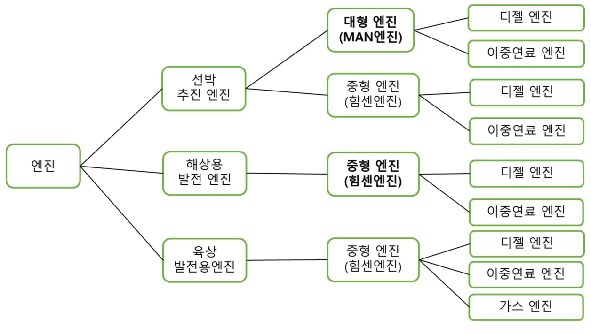
표 3. 국내 경쟁사 비교 2021년 기준(출처: 사업보고서 및 IR자료 참고 본인 작성)
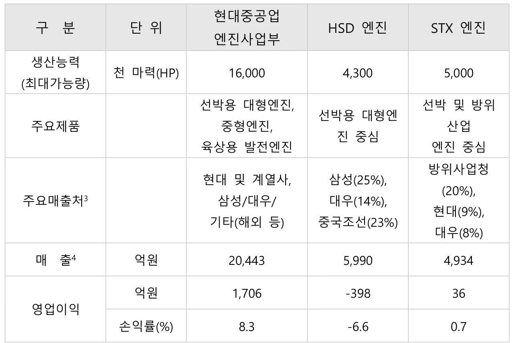
선박용 엔진 기준으로 한국은 대형엔진 중심, 일본은 중대형 선박 추진 엔진 중심의 생산을, 후발국인 중국은 중소형 엔진 위주의 생산 중심이다. 중국 조선업체의 급격한 성장에도, 중국 선박엔진 제작업체의 경쟁력은 열위한 상태로 이를 극복하기 위해 2016년 중국 국영 조선공사(CSSC)는 Win GD(스위스)를 100% 인수하였다.
국내 엔진 제작업체 경쟁사를 비교해 보면 생산량 측면에서 현대중공업 엔진 최대 생산량이 16백만 마력(HP)으로 HSD 엔진이나 STX 엔진 4~5백만 마력 대비 3배 이상의 차이를 보인다. 영업이익 측면에서도 2021년 기준으로 현대중공업은 8.3%의 손익률을 보이는 반면, HSD 엔진은 적자, STX 엔진은 소폭의 흑자를 유지하고 있다. 이는 현재 현대중공업의 경우 생산능력 대비 가동률 100%인 반면, HSD 엔진은 생산능력 대비 가동률 60%로 물량 부족에 따른 고정비 미회수가 적자 원인이다.
현대중공업은 1978년 세계최대 엔진 공장을 설립한 후 1979년 첫번째 대형 엔진을 MAN(덴마크)으로부터 라이선스 받아 생산하기 시작했다. 1990년에는 중형엔진 역시 라이선스 받아 생산하기 시작했다. 2001년에는 10년간의 연구개발 끝에 중형 엔진 독자모델인 힘센(HiMSEN) 엔진 디젤을 출시한다. 이후 엔진 연료를 기존 디젤엔진에서 가스엔진, 이중연료 엔진5등으로 다양화하고, 출력량 역시 증가시킬 수 있도록 개발하여 중형 이중연료 기준 세계 최대 출력 엔진을 출시하였다. 이는 제품에 대해 지속적인 기술 혁신을 보이는 것으로 평가될 수 있다. 이런 혁신을 기반으로 2021년까지 누적기준 대형엔진 6,773 Set, 힘센엔진 14,000 Set를 생산할 수 있었다.
그림 8. 현대중공업 엔진 개발 Timeline (출처: 영업 브로셔 및 홈페이지 참고 본인 작성)
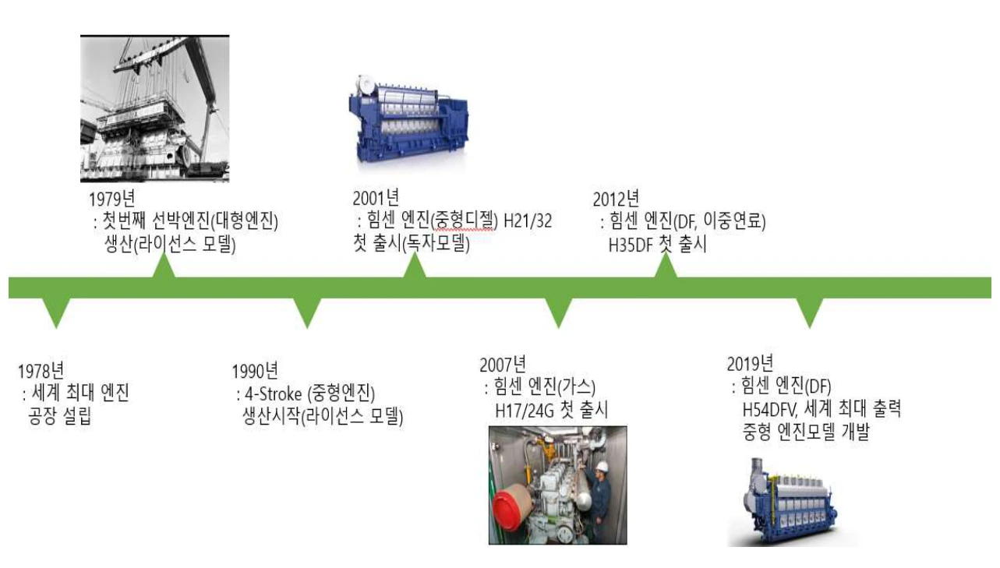
현대중공업 엔진사업은 2001년 독자모델 출시 전까지를 창업기, 이중연료 출시 및 조선업 호황기까지를 성장기, 현재까지를 성숙기로 나눌 수 있다. 매출액 역시 창업기에는 생산공장을 짓고, 투자하고, 기술 라이선스를 받아 양산을 하면서 매출액은 5천억 정도에 머무르지만, 성장기에는 본격적으로 시설 투자한 생산공장의 완성, 조선업 호황에 따른 수주량 증가, 독자 모델 중형엔진이 개발 및 양산되면서 매출액이 3조원까지 증가한다. 이후 조선업 불황과 환경 규제로 엔진 연료 방식이 디젤에서 이중연료 등 친환경 연료로 전환되면서, 친환경 엔진을 개발, 생산할 수 있는 능력이 성숙기에 접어든 엔진 시장에서 중요한 분기점이 되고 있다. 이런 성숙기에 현대중공업은 사우디 아람코와 합작 엔진회사를 설립, 엔진 기술 이전하는 계약을 체결하며 세계적으로 기술력을 인정받았다.
그림 9. 힘센엔진 모델 변화 (출처: 영업 브로셔 및 홈페이지 참고 본인 작성)
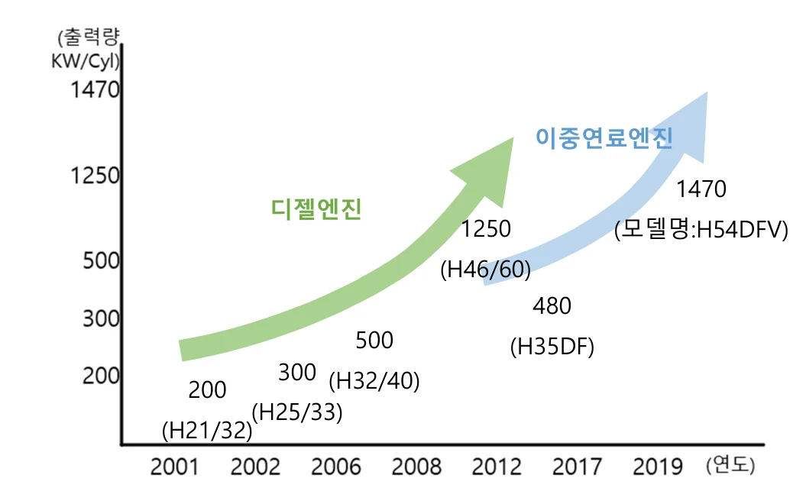
그림 10. 엔진사업 성장 단계 모형(출처: 현대중공업 사업보고서 참고 본인 작성)
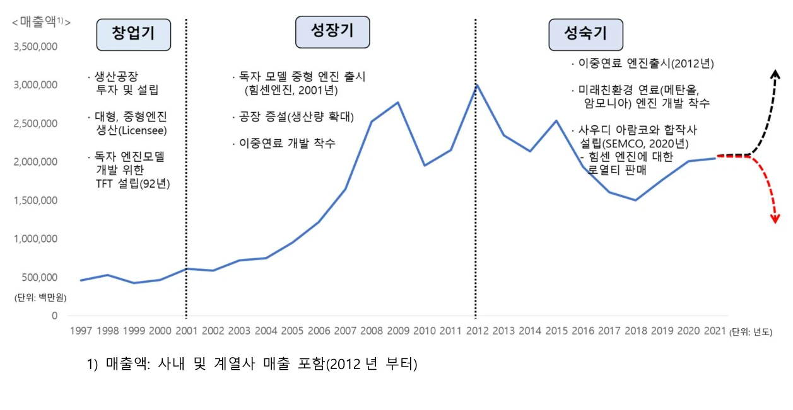
4. 혁신 사례연구
현대중공업 엔진사업 성장 단계별로 연구 주제1(RQ1)은 후발기업이 어떻게 독자엔진 개발에 성공할 수 있었는지를 살펴보았다.
현대중공업은 한국 조선 사업의 성장과 더불어 그룹내(미포조선, 삼호중공업)내부 물량(Captive Market)을 안정적 확보하면서 축적된 생산경험을 확보하였다.
현대중공업은 대형 디젤엔진을 1979년 1호기 생산 이후, 4년만에 누적 1백만 마력, 1998년 5백만 마력, 1992년 1천만 마력, 1997년 2천만 마력, 2001년 3천만 마력(세계 1위 생산 업체 등극), 2003년 4천만 마력 생산, 2005년 5월 6일 세계 최초로 5천만 마력 생산을 달성하였다. 중형엔진은 1983년 최초 생산 이후, 1997년까지 누적 1,116대 생산, 2006년까지 누적 4,912대의 제품을 생산하였다.
Licenser로부터 기술 검토된 기본설계 수령 후 세계에서 제일 많은 제품을 생산하면서 생산 설계 기술, 생산/조립 기술 능력을 심화할 수 있었다. 이러한 점은 김왕동(2002) 개발도상국 기업의 기술능력 축적과정 중 내부기술, 기술 학습활동에 해당할 수 있다.
그림 11. 현대중공업 세계 최단기간 대형엔진 생산 4천만 마력 돌파(출처: 뉴스타운 경제, 2003, http://www.newstown.co.kr/news/articleView.html?idxno=5808)
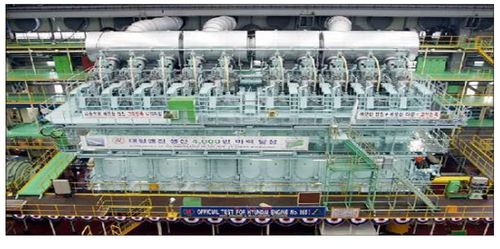
표 4. 기존엔진과 힘센엔진 비교 (출처: HiMSEN 엔진 개발과정 소개, 김종석 외, 2005, 참고하여 본인 작성)
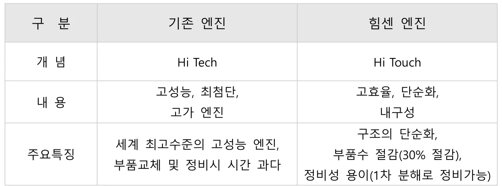
표 5. 선박용 엔진 아키텍처론(Fujimoto, 2001) 적용시 (출처: 한중 조선 산업의 제품 아키텍처와 조직역량에 관한 연구, 백서인 외, 2018)
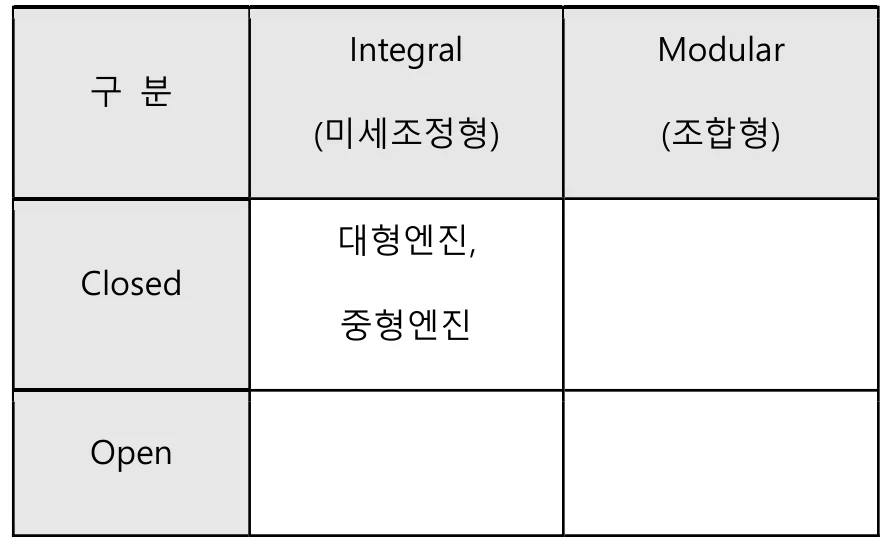
1970년대 두 차례 오일쇼크로 인해 세계 시장에서 엔진관련 최대 관심은 연료 절감이었다. 그 결과 1970년대 150g/시간당∙마력(HP) 에서 1980년대 120g으로까지 연료 절감을 이루어 냈다. 이후 고객들의 요구는 ① 유지, 보수 주기 연장 ② 유지, 보수 비용 최소화 ③ 유지, 보수 용이화 ④ 신뢰성 향상 ⑤ 환경오염 규제 대비 ⑥ 엔진제작 비용 최소화 등으로 변하기 시작했다. 현대중공업은 제작 경험들을 통해 고성능 제품보다는 고객들이 사용하기 편한 제품에 대한 Needs가 높다는 시대의 변화를 알 수 있었다. 이를 기반으로 Hi Touch 개념(Simple, Robust, Smart) 독자모델 개발할 수 있었다.
아키텍처론(Fujimoto, 2001) 통해 적용시 선박용 엔진은 엔진제조사와 조선소 간 긴밀한 연결이 필요한 Closed, 선박별로 엔진의 미세조정이 필요하고 연결속성이 복잡한 Integral 구조이기 때문에, 이런 Hi Touch 개념의 핵심인 구조 단순화, 부품수 30% 경감 등은 Integral의 복잡성을 축소함으로 모델을 개량화한 것으로 볼 수 있다. 구체적인 예로, 기존 엔진은 외부를 감싼 외관이 복잡해 엔진 내 소모성 부품 교체 및 정비시 시간 소요가 큰 반면, 힘센엔진은 1차 분해로 정비가 가능한 개선된 방식을 적용했다.
그림 12. 힘센엔진 Maintenance Concept (출처: 힘센엔진의 과거, 현재 & 미래, 김광수 외, 2006, 한국마린엔지니어링학회)
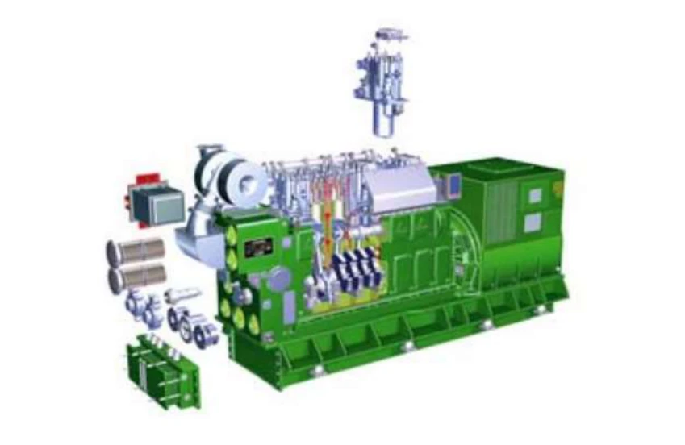
흡수역량 관점에서 살펴보면, 현대중공업은 1979년 부터 약 50년 동안 세계에서 가장 많은 선박용 엔진을 직접 제작 생산한 경험이 있었다. 현재 총 12천명 종업원(현대중공업 전체 기준) 중 생산직 근로자의 수가 7천명으로 전체 직원의 60%를 차지하며 제품을 생산하는 현장에서 일하고 있다. 또한, 현대중공업은 업계 최다인 총 29명 (2017년 기준)의 대한민국 명장을 배출하였다. 대한민국 명장이란 15년 이상 산업현장에서 최고 수준의 기술을 쌓고, 국가 산업경쟁력 향상에 기여한 숙련 기술자로 고용노동부에서 선정한 기술장인이다. Hi Touch기술은 이러한 뿌리 깊은 생산 기술 및 경험을 바탕으로 생산 현장으로부터 흡수, 개량화된 기술들이 다시 설계/연구 직원들에게 전달, 흡수되어 지는 선순환을 통해 가능하게 된 것이다.
그림 13. 현대중공업 대한민국 명장(출처: 현대중공업 기업 블로그, https://blog.hhi.co.kr/)
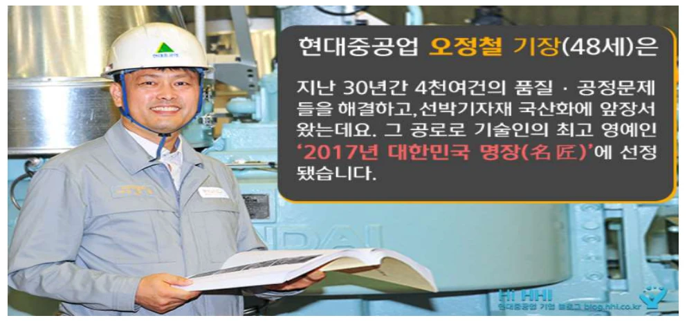
힘센엔진의 개량화 모습을 이진주, 배종태(1998) 기술개발 단계 모형에 적용해보면 기존의 Licensor로부터 New Technology을 로열티 계약(Formal Channel)을 통해 획득하여 흡수, 개량한 사례로 볼 수 있다. 이 때 가장 중요한 요인 중 하나는 A(Accumulation of related Technology)로 표시된 교육 및 경험을 통한 기존 기술의 축적으로, 현대중공업은 생산 경험을 통해 기술을 완전히 흡수 후 새로운 개선점(Hi Touch 개념)을 제시하면서 기존 엔진과 차별화하여 성공할 수 있었다. 이러한 개량화의 모습은 김왕동(2002) 개발도상국 기업의 기술능력 축적과정 중 외부기술원천, 기술 전략, 기술 학습활동에 해당할 수 있다.
그림 14. 개량화- 기술 성장 과정 이론 적용 (출처: Technology development processes: A model for a developing country with a global perspective, 이진주/배종태, 1988, 참고하여 본인 작성)
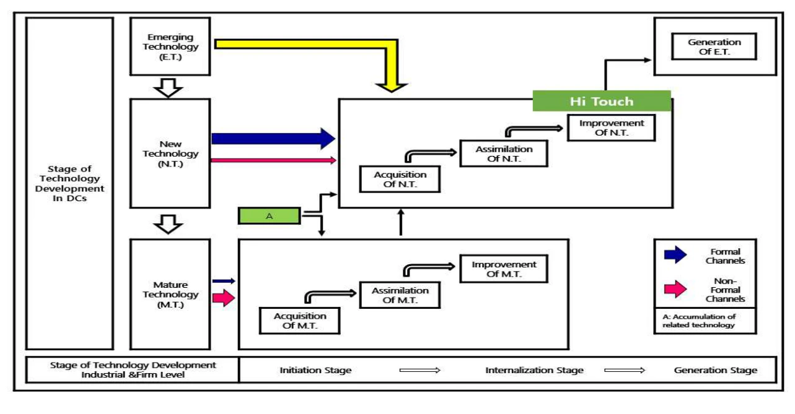
표 6. 연구개발 업무 분장 (출처: 출처: HiMSEN 엔진 개발과정 소개, 김종석 외, 2005, 참고하여 본인 작성)
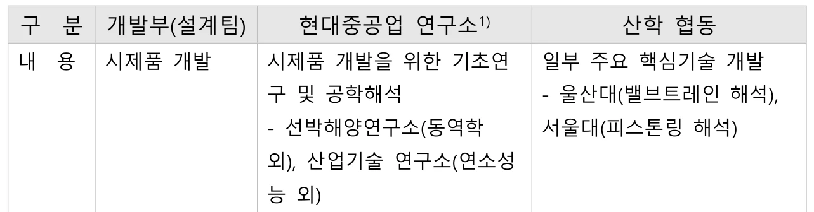
model for a developing country with a global perspective, 이진주/배종태, 1988, 참고하여 독자엔진 개발 관련 초기에는 대형엔진 설계를 담당하던 엔지니어 중심(개발부)으로 진행되다, 프로젝트가 진척을 보임에 따라 사내 연구소 역시 참여하는 구조로 진행되었다. 개발기간을 총 8년 목표로, 기술개발과 제품개발 2단계로 추진하였다. 개발 방법 역시 2원화 방식으로 추진되었는데, 개발부가 제품개발을 담당하고, 기초연구는 사내 연구소 및 사외 대학에서 산학 협동으로 진행되었다.
공유분업 방식을 통해 적용시, 연구소와 개발팀(설계)의 협력 방식은 타케우치, 노나카(1986)가 설명한 중복형 타입(Type B, Type C)으로 초기 개발시 제품개발과 기초 연구 일이 명확히 분업화되지 못하고, Integral 높은 업무로 설계/연구소간 공유되는 부분이 많은 타입의 분업이다. 중복형 타입은 공유 부문이 많아 업무 유연성이 높은 장점이 있지만, 의사결정이 늦어질 수 있는 단점이 있다.
개발부와 연구소의 인력이 늘고 제품 자체의 공유 부분이 늘면서, 의사결정의 병목현상 등 지연 요소가 발생이 증가하였다. 이 때 연구소 대표 연구원들을 장기간 개발부로 파견하여 이런 지연 요소를 해결하였다.
그림 15. 공유분업 방식(출처: The New New Product Development Game, 1986, Hirotaka Takeuchi and Ikujiro Nonaka)
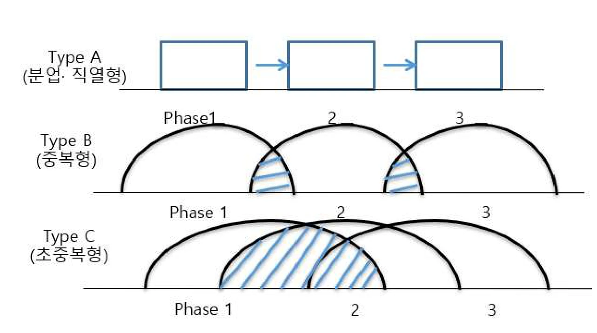
엔진개발부터 판매까지 주요일정6을 살펴보면, 1992년 설계 담당자들 위주로 엔진개발 TFT 구성하여 1994년 단기통 엔진개발 착수하였다. 이 때 설계와 연구 인력이 설계도면을 가지고 직접 공장에서 시제품 제작까지 하며 설계부터 생산까지 주관하였다. 1997년 단기통 엔진 출력증강에 성공하고, 1998년 Hi Touch 개념을 도입하여 차별화, 2000년 시제품 1호기 국산엔진 조립, 2000년 7월 새벽 3시 30분 힘센엔진 시운전에 성공하였다. 2001년 2월 외부 선급들로부터 제품에 대한 성능 Test를 통과하고, 2001년 3월에는 기존 중형엔진 Licensor(MAN)로부터 기술침해 여부 검증까지 통과하여 독자모델을 시장에서 판매할 수 있었다. 다만, 신뢰성, 안정성이 중요한 엔진 시장에서 선뜻 신제품을 구매하려는 고객은 없었고, 2001년 10월 도미니카 공화국에 육상용 발전 엔진으로 힘센엔진을 기존 하자기간보다 1년 연장한 2년, 성능 문제시 100% 보상 조건으로 첫 판매를 하였다. 이후 품질을 인정받아 2005년 쿠바에 이동식 발전설비(Packaged Power Station, PPS) 힘센엔진을 $4.6억 판매하는 대규모 계약을 체결하였다. 쿠바 화폐에는 힘센엔진 그림이 그려져 있을 정도로 힘센엔진의 기술력은 세계에서 인정받고 있다. 이러한 설계/연구소의 엔진 개발 모습은 김왕동(2002) 개발도상국 기업의 기술능력 축적과정 중 내부기술, 외부기술원천, 조직요인에 해당할 수 있다.
그림 16. 힘센엔진 선급 Test: 엔진 검사 및 증서 발행, 힘센엔진이 그려진 쿠바 화폐
출처: KBS 신화창조의 비밀-힘센엔진 프로젝트, 2004
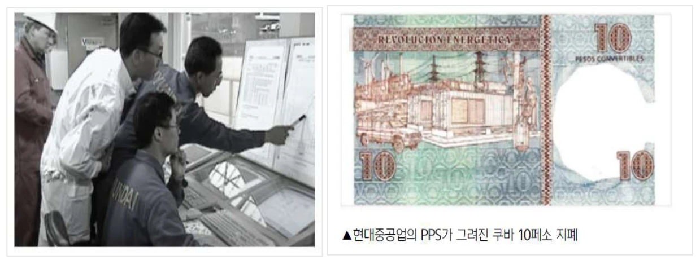
현대중공업은 엔진 관련 독자 기술이 없는 관계로 막대한 License 로열티(연간 약 100억원) 뿐 아니라, 1990년 대규모 엔진 수출 계약을 앞두고 생산 및 판매를 병행 중인 기술 제휴사의 미승인으로 계약 취소되는 사건이 발생7하였다. 또한, 정몽준 사장에 의한 오너 경영, 연구소 출신 민계식 사장에 의한 기술 중심 경영으로 독자기술에 대한 니즈 역시 증가하는 상황이였다. 결국 1993년 개발만 10년 가까이 걸리는 장기/대규모 프로젝트(실제 7년, 400억원 연구개발비 투입)가 승인되었다. 기존 Licensor로부터 기존 제품에 대한 기술 제휴가 끊어질 수 있는 위험부담까지 안고 추진하는 성공이 불확실한 프로젝트였다. 이런 장기 프로젝트에 성공을 위해서는 최고 경영층과 임직원들 모두 무모하다고 할 정도의 강력한 추진력이 필수적이다. 이는 정주영 창업자의 철학이 기반이 된 현대중공업의 경영이념(현대정신)에서 원천을 찾을 수 있다. 현대정신은 구체적으로 창조적 예지, 적극의지, 강인한 추진력을 뜻한다.
그림 17. 현대중공업 경영이념(출처: 현대중공업 홈페이지, https://www.hhi.co.kr/About/about02_1)
출처: KBS 신화창조의 비밀-힘센엔진 프로젝트, 2004
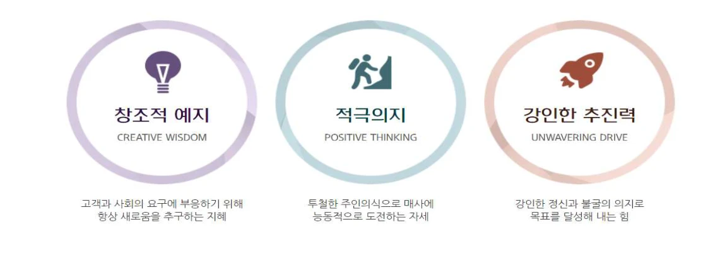
이러한 현대 정신의 결과 중 하나로, 2020년 11월 현대중공업 그룹과 사우디 아람코는 사우디아라비아 킹살만 조선 산업단지내 연간 생산 200여대 규모의 엔진제작 합작사(SEMCO)를 설립하였고, SEMCO는 현대중공업으로부터 힘센엔진, 선박용 펌프를 라이선스 받아 생산할 예정이다. 이는 현대중공업이 Licensee에서 Licensor 전환된 획기적인 사건이다.
물론 대형엔진(2-Stroke 엔진)은 대형 선박 추진 엔진의 보수적 시장으로 진입이 어렵고, 개발 시 기존 제품 판매가 불가하므로 독자모델 개발이 어려운 상태(SEMCO 역시 대형엔진은 MAN 등에서 라이선스 받음)이다. 다만, 중형엔진의 독자기술을 바탕으로, 대형엔진 역시 신규 친환경 연료 엔진 개발시, Licensor와 초도품 공동 개발에 참여하고 있다. 이러한 현대정신 및 경영이념은 김왕동(2002) 개발도상국 기업의 기술능력 축적과정 중 최고경영자, 외부환경, 조직요인에 해당할 수 있다.
그림 18. 사우디 현대 엔진제작 합작사 SEMCO(출처: 현대중공업 홈페이지, http://www.hyundai-engine.com/ko/aboutus/Semco)
출처: 조선비즈, 2016.06.09
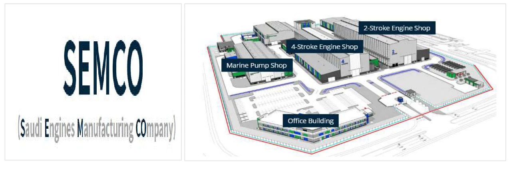
아무리 좋은 독자엔진을 개발하였다고 해도 그 기술이 시장에서 판매가 안 된다면 제품은 사장될 것이다. 연구 주제(RQ2)는 이런 점에서 어떤 혁신을 이루어서 시장 점유율 1위를 달성할 수 있었는지를 성장단계별로 조사해 보았다.
현대중공업은 연구개발비 관련 1999년 778억원(매출액 대비 1.23%)에서 2010년 1,841억원(매출액 대비 0.82%)으로 2014년까지 지속적인 연구개발 투자의 증가가 있었다. 하지만, 조선업 불황으로 현대중공업은 2016년 대규모 구조조정 시행하면서 생존자체가 위협받게 되자 연구개발비 규모 역시 줄일 수밖에 없었다. 구조조정이 시작된 2016년 이후 연구개발비 절대 총액이 2017년 907억, 2018년 708억, 2019년 842억원으로 감소하였다.
회사의 연구개발 투자 방식 역시 절대 금액이 줄면서 기존 양적 투자에서 질적/선별 투자로 변화하였다. 엔진 사업 역시 다양한 연구 개발보다는, 미래 핵심기술 위주로 선택과 집중하며 2016년 이후에는 친환경 엔진 개발, 엔진 출력 다양화 등에 집중 투자하였다. 이러한 결과로, 세계 최초로 고압의 엔진 배기가스를 정화할 수 있는 친환경 장치 제작 성공(2016년), HiMSEN 이중연료 세계 최대 출력 엔진(H54DF) 출시(2019년), 친환경 선박용 엔진 및 후처리 장치용 지능형 통합제어 시스템 개발(2020년, IR52 장영실 상 수상) 등의 성과를 낼 수 있었다.
그림 19. 현대중공업 연구개발비(출처: 현대중공업 사업보고서 참고 본인 작성)
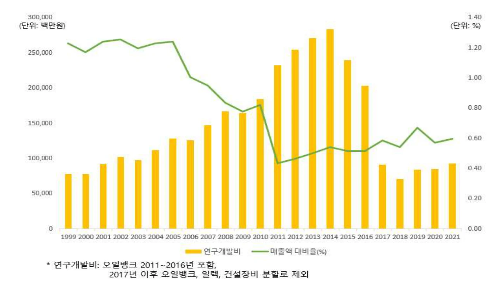
현대중공업 특허 추이 역시 연구개발비 추이와 비슷한 양상을 보인다. 현대중공업 선박엔진(Ship Engine) 관련 특허는 총 710건이 있으며 1999년 2건부터 2015년 93건까지 출원연도(Application)기준으로 계속적인 상승을 보였으나, 조선업 불황으로 2017년 48건, 2018년 38건 등 감소를 보인다. 비록 특허 수는 줄었지만, 선택과 집중을 보이며 핵심 기술에 대한 특허는 지속하였다. 이러한 결과로, 이중연료 엔진의 연료가스 누출감지가 용이한 파이프 구조체 특허(출원일 2016년) 및 선박용 저압 이중연료 엔진 특허(출원일 2018년) 등 성과를 낼 수 있었다. 이러한 연구개발 투자는 김왕동(2002) 개발도상국 기업의 기술능력 축적과정 중 내부기술, 기술전략, 기술 학습활동에 해당할 수 있다.
그림 20. 현대중공업 선박엔진 특허 추이(출처: Derwent 프로그램 통해 본인 작성)
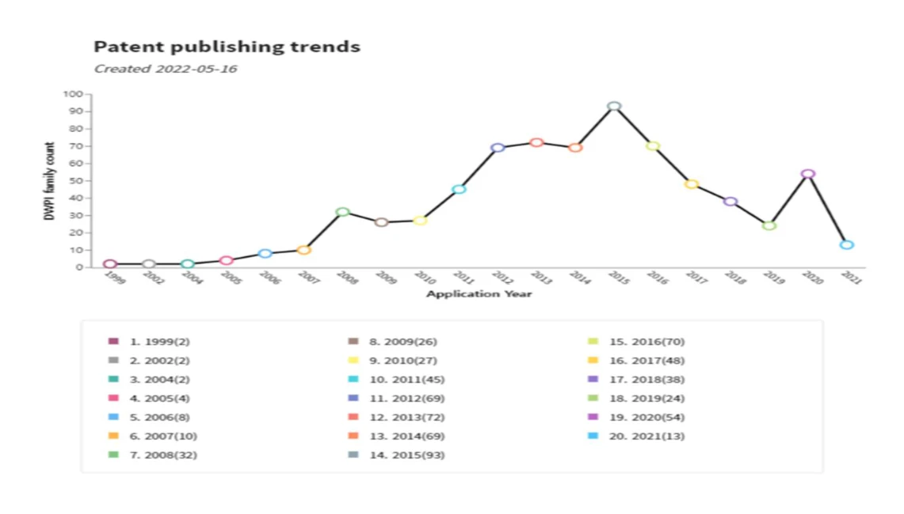
표 7. 국제기능올림픽 현대중공업 수상현황 (출처: 내부 인터뷰 통해 본인 작성)
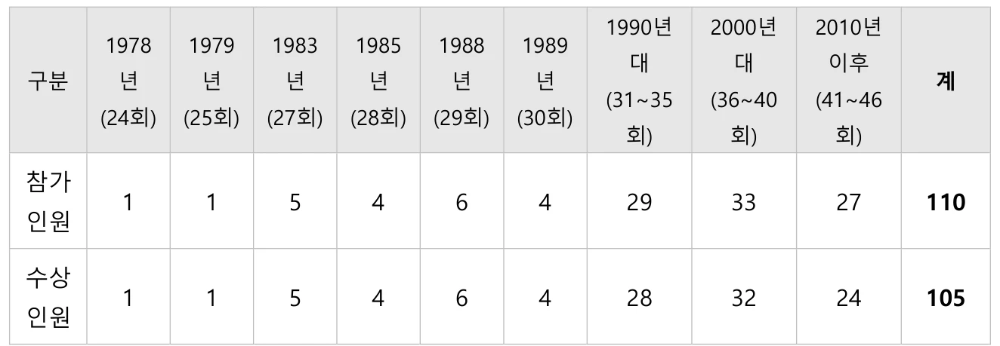
2016년 대규모 구조조정 등 조선업 불황에도 생산기술 교육 및 양성에는 투자를 지속하였다. 2022년 9월 46회 국제기능올림픽에서도 철골 구조물, 산업기계, 배관, CNC(Computerized Numerical Control) 선반 등에서 금메달 1개, 동메달 1개, 우수상 2개를 획득하였다. 현대중공업은 국제기능올림픽에서 1983년 제 27회 오스트리아 대회부터 2022년까지 20회 연속으로 금메달 획득하며, 지금까지 총 110명의 선수를 출전 105명(금 51, 은 15, 동 14, 우수 25)이 입상하였다. 현대중공업은 전문 기술교사와 대표 선수가 전문 기능교육 시설인 기술교육원에서 1대 1 맞춤형 훈련을 통해 기술을 전수했다. 이러한 생산기술 투자는 김왕동(2002) 개발도상국 기업의 기술능력 축적과정 중 내부기술에 해당할 수 있다.
세계 최초로 이중연료 대형엔진(덴마크 MAN과 공동개발), 이중연료 HiMSEN 엔진(현대중공업 독자개발), LNG 연료가스시스템(현대중공업 독자개발)을 연계한 이중연료 패키지를 2012년 개발하였다. 이중연료 엔진은 디젤 엔진과 가스 엔진을 결합하여 자유롭게 선택할 수 있는 엔진으로, 디젤과 가스 두 방식의 공통분모를 최대한 공유하면서 가스 점화시기를 제어하기 위한 일부 설비 등이 추가되어 만들어진 엔진이다. 이를 통해 탄소, 질소, 황 산화물 배출량 줄이면서 디젤엔진과 동일한 성능을 발휘할 수 있다. 그 결과, 2021년 LNG 선박용 중형 이중연료 엔진 시장에서 85%가 HiMSEN H35DF를 사용하는 놀라운 성과를 만들었다.
그림 21. HiMSEN H27 이중연료 엔진(출처: 영업 팜플렛 참고하여 본인 작성)
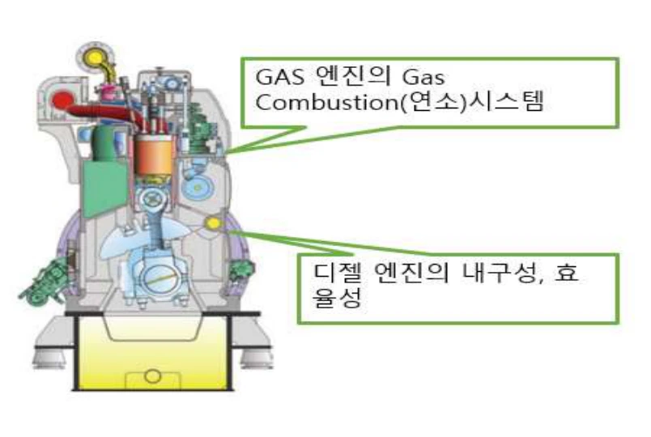
이중연료 개발을 이진주, 배종태(1998) 기술개발 단계 모형에 적용해보면 세계 최초 이중연료 엔진 패키지의 개발 모습은 기존 디젤엔진이 가진 환경 오염 문제를 극복하기 위해, 기존의 Mature & New Technology를 완전히 흡수한 뒤 Emerging Technology에 도전한 것으로 볼 수 있다. 이는 현대중공업 자체적인 독자 연구 개발(Indigenous R&D)을 통해 이중연료 엔진을 개발하였다는 점에서 Generation of Emerging Technology로 구분할 수 있다. 이러한 신규 이중연료 엔진 개발은 김왕동(2002) 개발도상국 기업의 기술능력 축적과정 중 기술전략, 기술 학습활동에 해당할 수 있다.
그림 22. 이중연료 엔진 개발- 기술 성장 과정 이론 적용 (출처: Technology development processes: A model for a developing country with a global perspective, 이진주/배종태, 1988, 참고하여 본인 작성)
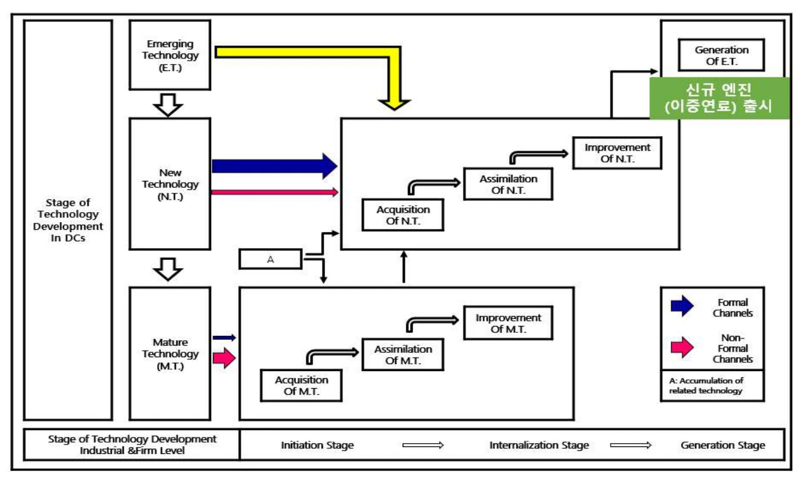
processes: A model for a developing country with a global perspective, 이진주/배종태, 현대중공업 엔진공장 생산 능력(최대 생산량 기준)은 1999년 3백만 마력에서 현재 16백만 마력으로 5배 이상 확장하였다. 이는 2008년까지 수익의 일부분을 계속적인 공장 증설에 투자한 결과이다. 대형엔진, 중형엔진 생산설비 확장을 위해 2,500억원 이상의 대규모 투자를 하였다. 국내 타엔진 회사 생산능력 대비 3배 이상의 규모를 가지며, 경쟁사 대비 규모의 경제를 통한 가격 경쟁력 확보를 통해 시장 확대할 수 있는 요인이 되었다. 이러한 시설투자는 새로운 장비와 기계를 도입하였다는 점에서, 김왕동(2002) 개발도상국 기업의 기술능력 축적과정 중 외부기술에 해당할 수 있다.
그림 23. 엔진 생산능력 및 시설투자(출처: 현대중공업 사업보고서 참고 본인 작성)
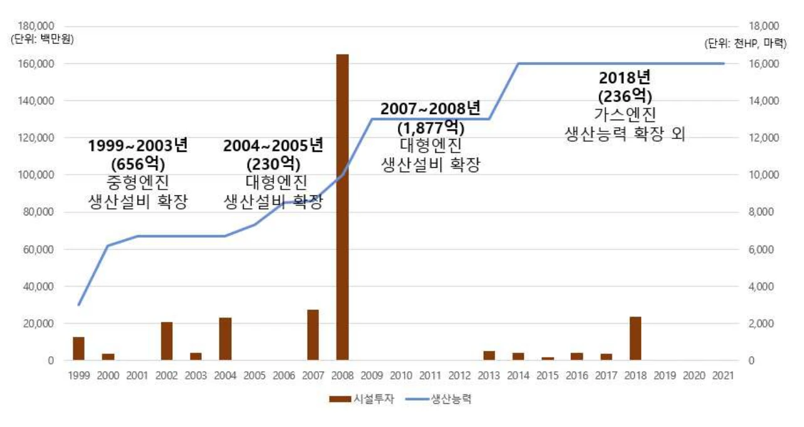
현대중공업은 경영 위기로 연구개발 투자 규모는 줄었지만, 핵심기술에 투자는 지속 중이다. 2021년 9월에는 업계 최초로 친환경 암모니아 연료공급시스템에 대한 개념설계 기본인증(AIP)을 한국선급(KR)으로부터 획득하였다. 2022년 9월에는 이중연료 기반의 LNG 수소 혼소 힘센 엔진 개념설계 기본인증(AIP)을 위한 성능시험에 성공하였다. 미래 친환경 추진 엔진으로 2022년 메탄올 엔진, 2023년 암모니아 엔진, 2025년 수소엔진 개발을 목표로 연구 진행 중에 있다. 대형엔진 역시 차세대 친환경 연료(메탄올, 암모니아 등) 엔진들에 대해 라이선스사와 공동 개발 중에 있다.
그림 24. 친환경 엔진개발 관련(출처: 월간수소 경제, 2021.10 월/ 매일경제, 2021.10 월)
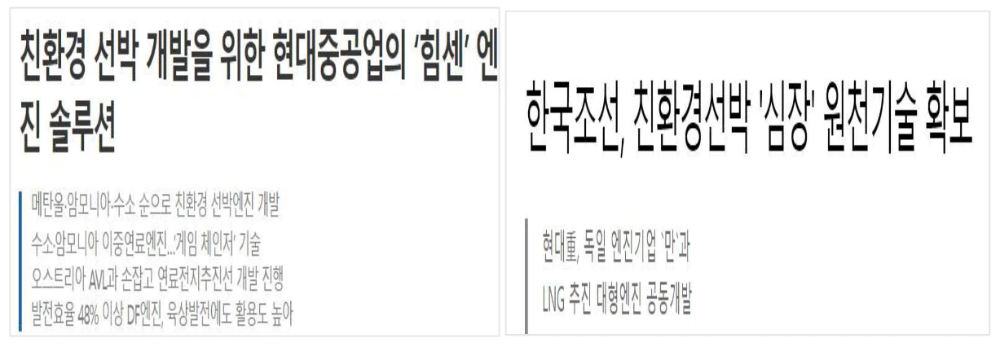
탄소 중립 시대를 준비하기 위해, 기존 디젤엔진에서 이중연료엔진(LNG 경우 중유대비 이산화탄소 23% 저감)으로, 이중연료엔진에서 차세대 친환경 엔진(메탄올 경우 탄소 95% 저감, 암모니아 및 수소 경우 탄소 배출 없음)으로 지배적 기술(Dominant Design)이 변화하고 있다. 현재 차세대 친환경 엔진 개발은 시작점에 있으며, 이를 위해 현대중공업은 기본 설계 기술 확보에 집중하고 있다. 이를 Double S- Curve 기술 혁신 이론에 적용해 보면, 현재를 기존 디젤 엔진 및 이중연료 엔진에서 친환경 엔진에 새로운 S 커브로 전환하는 시점으로 평가할 수 있다. 이러한 미래 친환경 엔진개발은 김왕동(2002) 개발도상국 기업의 기술능력 축적과정 중 기술 전략, 기술 학습활동에 해당할 수 있다.
그림 25. Double S- Curve 기술 혁신(출처: Exploring the limits of the technology S Curve, C.M. Christensen, 1992, 참고하여 본인 작성)
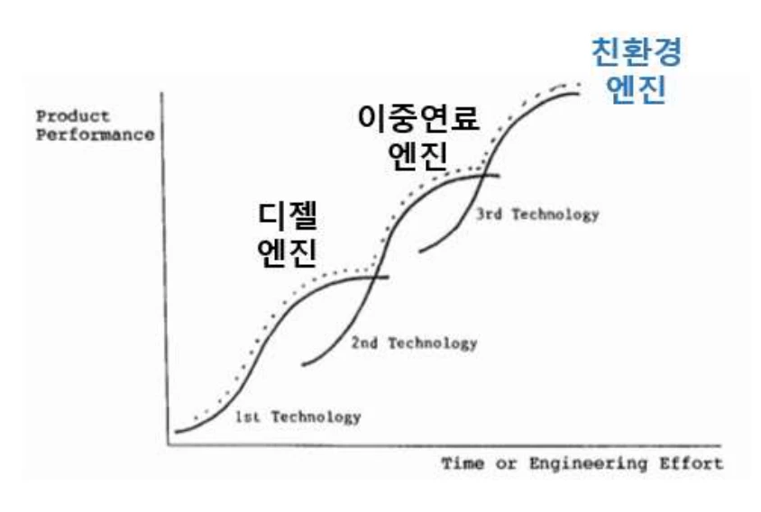
지금까지 조사들을 총괄하여 현대중공업 엔진사업 기술능력 축적 과정을 김왕동(2002) 개발도상국 기업의 기술능력 축적과정 이론에 적용해 정리해 보면 아래(그림 26)와 같이 정리할 수 있다. 높은 로열티 및 영업제한 등 외부환경들 변화에, 외부의 경쟁업체 및 사용자 등 외부요인, 내부 생산 경험 및 기술 등 내부요인이 기술전략에 영향을 주었다. 여기에 최고 경영자의 적극 지원, 설계/연구소간 협력 및 현대정신 등 조직 요인이 독자모델 및 이중연료 엔진을 개발하려는 기술전략과 기술학습활동에 영향을 더 하였다. 이런 영향으로 최종적으로 현대중공업은 독자 모델 엔진인 힘센 디젤 엔진, 힘센 이중연료 엔진의 기술능력을 갖게 된다. 이러한 기술능력은 다시, 조직요인과 내부기술에 영향을 주어, 미래 친환경 엔진(암모니아, 수소 엔진 등) 개발로 이어지는 선순환 모습을 만들고 있다.
그림 26. 현대중공업 엔진사업 기술능력 축적 과정 정리(출처: 기술능력의 축적과정 및 영향요인에 대한 연구, 김왕동, 2002, 참고하여 본인 작성)
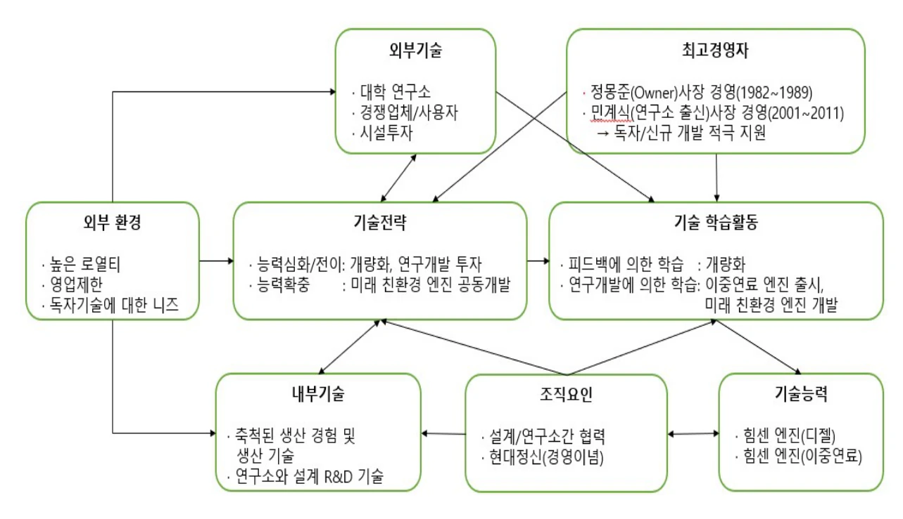
5. 결론 및 시사점
본 연구는 먼저 연구 주제1(RQ 1) 후발주자로서 어떻게 Licensee 업체가 독자엔진 개발 성공할 수 있었는지 혁신 요인 연구 대해 창업기에서 성장기까지 살펴보면서 ① 축적된 생산 경험 ② 개량화(Hi Touch) ③ 연구소와 설계 협력 ④ 현대정신(경영이념) 등을 핵심요인으로 판단하였다. 연구 주제2(RQ 2) 독자개발 이후 어떻게 시장에서 살아남아 점유율 높이며, 성장할 수 있었던 요인이 무엇인지에 대해서는 성장기에서 성숙기를 살펴보면서 ① 연구개발 투자 ② 생산기술 투자 ③ 신규 엔진-이중연료 출시 ④ 시설투자 ⑤ 미래 친환경 엔진 개발(메탄올, 암모니아, 수소 엔진) 등을 핵심요인으로 판단하였다.
현대중공업의 독자엔진 개발 및 성장을 살펴보면서, 이를 가능하게 한 전환점(Turning Point)으로 창업기에는 기존 제품과 다른 차별화 및 개량화(Hi Touch), 성장기 이후에는 친환경 시대에 맞춘 신규엔진 개발(이중연료 엔진) 등이 있다. 이런 전환점을 만들기 위한 추진력(Driving Force)은 축적된 생산 경험을 통해 흡수된 기술이 연구개발로 이어지고, 이런 연구의 성과를 통해 또 다시 새로운 것에 도전하는 경영이념(현대정신)에 있다고 생각된다.
각주
- 경쟁우위 확보를 위한 후발기업의 경쟁전략, 김정권, 2010 10 ↩
- 마력(Horse Power, HP): 한마리 말이 1초 동안 75kg의 추를 1m 들어 올리는 데 드는 힘, 출력량 13 ↩
- 주요매출처: 현대중공업 2020년 기준, 그 외 2021년 기준 ↩
- 매출: 현대 및 계열사(현대중공업, 미포, 삼호) 매출 포함 15 ↩
- 이중연료 엔진: 디젤연료와 가스 연료를 자유롭게 선택 사용 엔진 16 ↩
- 출처: KBS 신화창조의 비밀-힘센엔진 프로젝트, 2004 25 ↩
- 출처: KBS 신화창조의 비밀-힘센엔진 프로젝트, 2004 26 ↩
- 출처: 조선비즈, 2016.06.09 28 ↩
Reference
- 김종석 외(2005), HiMSEN 엔진 개발과정 소개, 한국과학기술정보연구원 (KISTI)
- 김종석 외(2005), 현대중공업 중속디젤엔진 힘센엔진 패밀리의 신모델 추가 개발, 한국과학기술정보연구원(KISTI)
- 김광수 외(2006), 힘센엔진의 과거, 현재 & 미래, 한국마린엔지니어링 학회
- 한국조선해양(구현대중공업, 1999년~2021년), 현대중공업(2021년) 사업보 고서
- 유승남(1998), 현대중공업 디젤엔진 부문이 걸어온 길, 한국박용기관학 회
- 전효중(2006), 국내 선박용 디젤엔진산업의 발전과 전망, 한국마린엔지 니어링학회지
- 김정권(2010), 경쟁우위 확보를 위한 후발기업의 경쟁전략, 지역발전연 구
- 김왕동(2002), “기술능력의 축적과정 및 영향요인에 대한 연구”, 지식경 영연구
- 백서인 외(2018), “한중 조선 산업의 제품 아키텍처와 조직역량에 관한 연구”, 기술혁신 연구
- 현대중공업 엔진기계 사업부 홈페이지, https://www.hyundai- engine.com/ko
- 이진주 외(1988), “Technology development processes: A model for a developing country with a global perspective”, R&D Management
- Clayton M. Christensen(1992), Exploring the limits of the technology S-curve, Production and Operation Management Vo.1 No.4
- Hirotaka Takeuchi and Ikujiro Nonaka(1986), The New New Product Development Game, Harvard Business Review